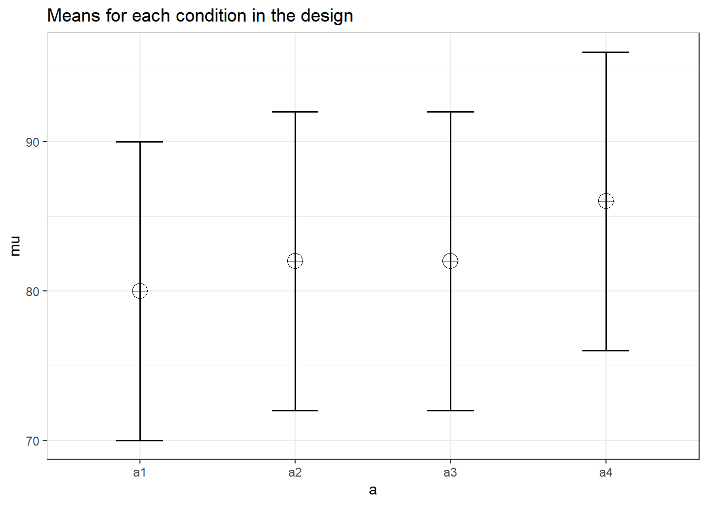

Chapter 10 Analytic Power Functions
For some designs it is possible to calculate power analytically, using closed functions. Within the Superpower package we have included a number of these closed functions. As you will see below, each analytic function only serves a very narrow scenario while the simulations functions are much more flexible. In addition, we will compare these functions to other packages/software. Please note, that the analytic power functions are designed to reject designs that are not appropriate for the functions (i.e., a 3w design will be rejected by the power_oneway_between function).
10.1 One-Way Between Subjects ANOVA
First, we can setup a one-way design with four levels, and perform a exact simulation power analysis with the ANOVA_exact function.
string <- "4b"
n <- 60
mu <- c(80, 82, 82, 86)
# Enter means in the order that matches the labels below.
sd <- 10
design_result <- ANOVA_design(design = string,
n = n,
mu = mu,
sd = sd)
| power | partial_eta_squared | cohen_f | non_centrality | |
|---|---|---|---|---|
| a | 81.21291 | 0.0460792 | 0.2197842 | 11.4 |
We can also calculate power analytically with a Superpower function.
## [1] 81.21291This is a generalized function for one-way ANOVA’s for any number of groups. It is in part based on code from the pwr2ppl (Aberson 2019) package (but Aberson’s code allows for different n per condition, and different sd per condition).
pwr2ppl::anova1f_4(m1 = 80, m2 = 82, m3 = 82, m4 = 86,
s1 = 10, s2 = 10, s3 = 10, s4 = 10,
n1 = 60, n2 = 60, n3 = 60, n4 = 60,
alpha = .05)## Power = 0.812 for eta-squared = 0.05We can also use the function in the pwr package (Champely 2020). Note that we need to calculate f to use this function, which is based on the means and sd, as illustrated in the formulas above.
##
## Balanced one-way analysis of variance power calculation
##
## k = 4
## n = 60
## f = 0.2179449
## sig.level = 0.05
## power = 0.8121289
##
## NOTE: n is number in each groupFinally, g*Power (Faul et al. 2007) provides the option to calculate f from the means, sd and n for the cells. It can then be used to calculate power.

10.2 Two-way Between Subject Interaction
Now, we will setup a 2x2 between-subject ANOVA.
string <- "2b*2b"
n <- 20
mu <- c(20, 20, 20, 25)
# Enter means in the order that matches the labels below.
sd <- 5
design_result <- ANOVA_design(design = string,
n = n,
mu = mu,
sd = sd)| power | partial_eta_squared | cohen_f | non_centrality | |
|---|---|---|---|---|
| a | 59.78655 | 0.0617284 | 0.2564946 | 5 |
| b | 59.78655 | 0.0617284 | 0.2564946 | 5 |
| a:b | 59.78655 | 0.0617284 | 0.2564946 | 5 |
Now, let’s use the analytic function power_twoway_between.
#using default alpha level of .05
power_res <- power_twoway_between(design_result)
power_res$power_A## [1] 59.78655## [1] 59.78655## [1] 59.78655We can compare these results to (Aberson 2019), as well.
pwr2ppl::anova2x2(m1.1 = 20,
m1.2 = 20,
m2.1 = 20,
m2.2 = 25,
s1.1 = 5,
s1.2 = 5,
s2.1 = 5,
s2.2 = 5,
n1.1 = 20,
n1.2 = 20,
n2.1 = 20,
n2.2 = 20,
alpha = .05,
all = "OFF")## Power for Main Effect Factor A = 0.598## Power for Main Effect Factor B = 0.598## Power for Interaction AxB = 0.59810.3 3x3 Between Subject ANOVA
We can extend this function to a two-way design with 3 levels.
string <- "3b*3b"
n <- 20
mu <- c(20, 20, 20, 20, 20, 20, 20, 20, 25)
# Enter means in the order that matches the labels below.
sd <- 5
design_result <- ANOVA_design(design = string,
n = n,
mu = mu,
sd = sd)
| power | partial_eta_squared | cohen_f | non_centrality | |
|---|---|---|---|---|
| a | 44.86306 | 0.0253325 | 0.1612169 | 4.444444 |
| b | 44.86306 | 0.0253325 | 0.1612169 | 4.444444 |
| a:b | 64.34127 | 0.0494132 | 0.2279952 | 8.888889 |
#using default alpha level of .05
power_res <- power_twoway_between(design_result)
power_res$power_A## [1] 44.86306## [1] 44.86306## [1] 64.34127References
Aberson, Chris. 2019. Pwr2ppl: Power Analyses for Common Designs (Power to the People). https://CRAN.R-project.org/package=pwr2ppl.
Champely, Stephane. 2020. Pwr: Basic Functions for Power Analysis. https://github.com/heliosdrm/pwr.
Faul, Franz, Edgar Erdfelder, Albert-Georg Lang, and Axel Buchner. 2007. “G*Power 3: A Flexible Statistical Power Analysis Program for the Social, Behavioral, and Biomedical Sciences.” Behavior Research Methods 39 (2): 175–91. http://www.psychologie.hhu.de/arbeitsgruppen/allgemeine-psychologie-und-arbeitspsychologie/gpower.html.